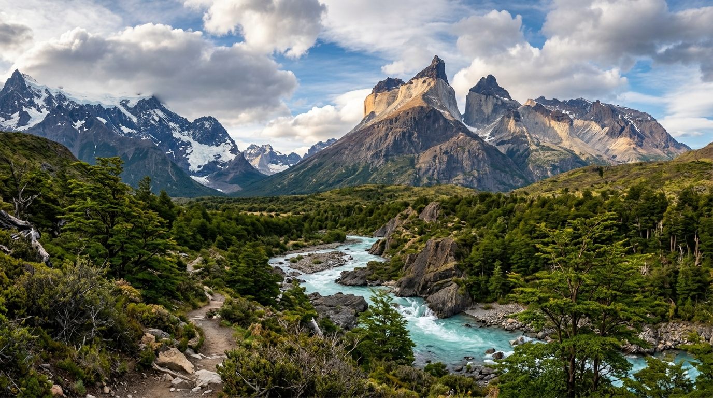
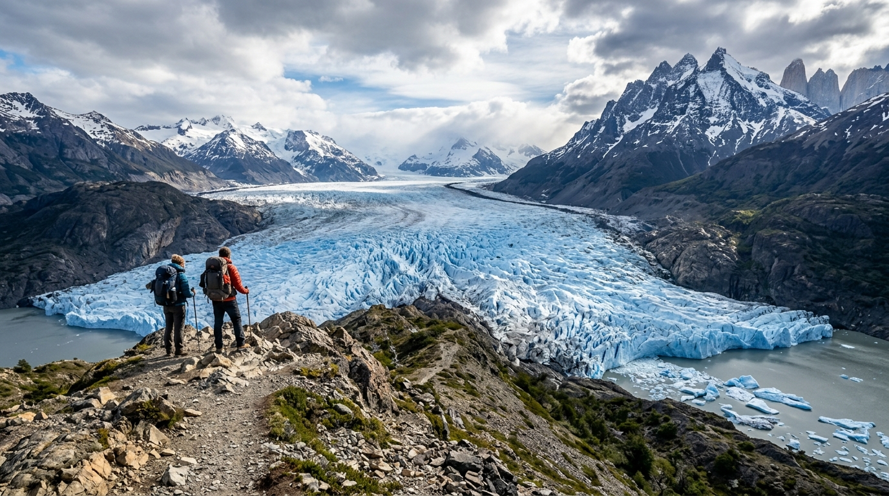
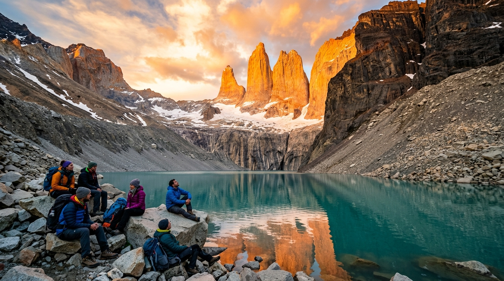

5 Días / 4 NochesCircuito W Clásico Guiado
La travesía más emblemática de la Patagonia. Une el Mirador Base Torres, el corazón del Valle del Francés y las imponentes lenguas glaciares del Lago Grey con alojamiento en refugios o domos.

8 Días / 7 NochesCircuito O (Macizo Completo)
La vuelta completa al Macizo del Paine. Una expedición exigente y solitaria a través de bosques de lenga vírgenes y el sobrecogedor cruce del Paso John Gardner (1,200 msnm).

Full Day (9h)Mirador Base Torres Sunrise
Salida de madrugada desde Puerto Natales para llegar a la mítica morrena justo cuando los primeros rayos del sol tiñen de naranja y fuego los tres cuernos de granito.
 2 Días / 1 Noche
2 Días / 1 Noche
Glaciar Grey Ice Trek & Kayak
Caminata con crampones sobre el hielo milenario del Glaciar Grey, exploración de grietas y cuevas glaciares, con navegación en kayak entre icebergs flotantes.